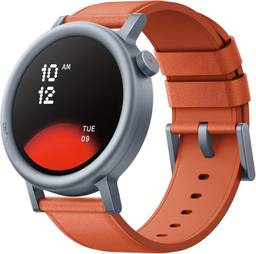
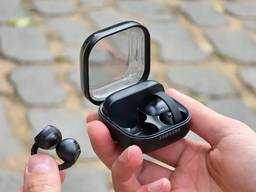
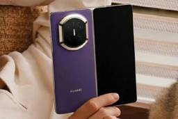
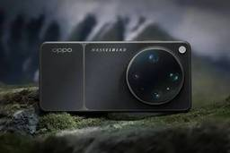
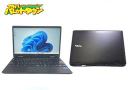
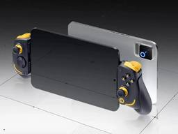
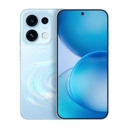

デイリーガジェット
https://daily-gadget.net/
デイリーガジェットは、スマホや海外発のユニークなガジェット、クラウドファンディングの注目アイテムまで幅広くレビュー。生活をもっと楽しく快適にする視点で、日常に驚きと便利さを届けるガジェット情報メディアです。
フィード

「CMF by Nothing Watch Pro 2」がセールで約1.5万円！1.32型AMOLED × ベゼル交換対応！
デイリーガジェット
11月1日0時からAliExpressで超大型セール「11.11セール」が開催されています!! AliExpressにて、最新フラッグシップモデル「CMF by Nothing Watch Pro 2」が大幅割引されるセ...投稿 「CMF by Nothing Watch Pro 2」がセールで約1.5万円！1.32型AMOLED × ベゼル交換対応！ は デイリーガジェット に最初に表示されました。関連記事:【AliExpress】「CMF Watch Pro 2」がセールで約7千円！ベゼル着せ替えギミック搭載Nothing傘下CMFが新型完全ワイヤレスを予告！オレンジのイヤーピースが示すのは「Buds 3」か、前世代は最大55時間再生とノイズキャンセリングを搭載なぜポケモン「ププリン」なのか！CMF by Nothingが予告した新カテゴリー製品「CMF Clip Pro」は耳をふさがないイヤーカフ型イヤホンか
4時間前
「Vivo S70」スペック判明！64MP望遠とテレコン対応の8s Gen 4搭載スマホ
デイリーガジェット
Vivoの次期スマートフォン「Vivo S70」に関する詳細なスペック情報がリークされました。著名リーカーのDigital Chat Station氏の報告によると、SoCに「Snapdragon 8s Gen 4」を採...投稿 「Vivo S70」スペック判明！64MP望遠とテレコン対応の8s Gen 4搭載スマホ は デイリーガジェット に最初に表示されました。関連記事:Vivo「X300E」がリーク情報！7.99mmの薄型に7,015mAh電池と5,000万画素ツァイス3眼、Snapdragon 8 Gen 5搭載かvivo「X Fold6」が中国で発表、シリーズ初のMediaTek製チップと7000mAhバッテリーを搭載した折りたたみスマホVivo「X500」シリーズGSMA登録！Dimensity 9600×7000mAh×LOFIC搭載で2026年秋に登場へ
10時間前
「Samsung 17インチ折りたたみタブレット」が開発中！たためば8インチになる大画面デバイス
デイリーガジェット
折りたたみデバイス市場が活況を呈する中、タブレット領域における新たな開発情報が浮上しました。著名なリーカーの報告によれば、Samsungが17インチサイズの折りたたみタブレットの開発に着手しています。展開時はノートPCに...投稿 「Samsung 17インチ折りたたみタブレット」が開発中！たためば8インチになる大画面デバイス は デイリーガジェット に最初に表示されました。関連記事:Galaxyのスマホが最大46,860円オフ！Amazonプライムセールで「Galaxy Z Fold7」「Galaxy S26」がお買い得価格にGalaxy Z Fold 8が幅広4:3へ変身？201g・4800mAhの新型と「Ultra」を併売、7月22日Unpackedで発表へSamsung折りたたみ3機種、7月22日ロンドン発表か。新型Wide Foldの「4:3画面」で動画もマルチタスクも快適？
11時間前

「Galaxy Buds On」が米国発売！音漏れ対策とGemini対応のクリップ型イヤホン
デイリーガジェット
韓国Samsungが本国で先行発表していた同社初のクリップ式オープンイヤーイヤホン「Galaxy Buds On」が、米国にて11月6日より229ドルで発売されます。耳を塞がず周囲の音を取り込める構造でありながら、高音質...投稿 「Galaxy Buds On」が米国発売！音漏れ対策とGemini対応のクリップ型イヤホン は デイリーガジェット に最初に表示されました。関連記事:Motorola「Moto Buds 2 Ultra」の存在が判明か！ハイレゾ対応・連続再生40時間のPlusを超える頂点モデルが発売する予定CMFが牛乳パック型スピーカー「Speaker S」と「Speaker M」を10月12日発表へ！低音用ラジエーター付きで360度再生「OnePlus Nord Buds 4」がインドで登場、52dBノイズキャンセリングと最大54時間再生の低価格ワイヤレスイヤホン
16時間前

Huawei「Mate X8」の仕様判明！6000mAh超電池とKirin 9050 Pro搭載の折りたたみスマホ
デイリーガジェット
Huaweiの次期折りたたみスマートフォン「Mate X8」のスペック情報がリークされました。最新情報によると、SoCに「Kirin 9050 Pro」を採用し、6000mAhを超える大容量バッテリーを搭載する見込みです...投稿 Huawei「Mate X8」の仕様判明！6000mAh超電池とKirin 9050 Pro搭載の折りたたみスマホ は デイリーガジェット に最初に表示されました。関連記事:「Huawei Mate X8」の仕様判明！6000mAh電池と覗き見防止画面を備えた折りたたみスマホ「Mate 90 Pro Max」の内部構造が判明！3D積層チップ搭載でゲーム性能向上も国内販売と技適には課題Huawei Mate 90に7,300mAhバッテリー搭載の可能性、Kirin 9030も採用へ
17時間前

「Oppo Find X10 Ultra」の仕様判明！初のDimensity、2億画素カメラ搭載の最上位スマホ
デイリーガジェット
Oppoのフラッグシップスマートフォン「Find X10 Ultra」に関する新たなリーク情報が登場しました。これまで最上位のUltraモデルにはSnapdragonが採用されてきましたが、次期モデルではMediaTek...投稿 「Oppo Find X10 Ultra」の仕様判明！初のDimensity、2億画素カメラ搭載の最上位スマホ は デイリーガジェット に最初に表示されました。関連記事:「OPPO Find X10」シリーズが海外発表！2nmチップと2億画素カメラ搭載で電池持ちが良いスマホOPPO「Find X10」の公式カメラ作例を公開！標準モデルなのにメインも望遠も2億画素、ハッセルブラッド監修の自然な描写OnePlus 16とOppo Find X10 Ultra、インドも見送りか。185Hzと9,000mAh級の最新機が中国専売へ
18時間前

第11世代Corei5搭載のNEC製中古ノートPCが税込26,180円！Panasonic製が38,500円ほかアキバパレットタウン週末セール品全まとめ
デイリーガジェット
中古PC・サーバ販売のアキバパレットタウン こちらで10月31日（土）から、週末セールが開催されます！ 第11世代 Corei5搭載、8/128 GB SSD、12.5インチ、Windows 11 Proという構成のNE...投稿 第11世代Corei5搭載のNEC製中古ノートPCが税込26,180円！Panasonic製が38,500円ほかアキバパレットタウン週末セール品全まとめ は デイリーガジェット に最初に表示されました。関連記事: 第11世代Corei3搭載のFujistu製中古ノートPCが税込17,800円！Lenovo製が64,800円ほかアキバパレットタウン週末セール品全まとめ第11世代Corei7搭載のLenovo製中古ノートPCが税込39,800円！Fujitsu製が19,800円ほかアキバパレットタウン週末セール品全まとめ第11世代Corei3搭載の富士通製中古ノートPCが17,800円！Panasonic製が19,800円ほかアキバパレットタウン週末セール品全まとめ
1日前

「iQOO G1」が海外発売！8.8型タブレット対応で遅延ゼロのUSB-C直結コントローラー
デイリーガジェット
iQOOは中国市場向けに、スマートフォンや小型タブレットに対応する伸縮式ゲーミングコントローラー「iQOO G1」を発表しました。価格は499元（約74ドル）で、11月4日に発売されます。USB-Cによる有線直結接続を採...投稿 「iQOO G1」が海外発売！8.8型タブレット対応で遅延ゼロのUSB-C直結コントローラー は デイリーガジェット に最初に表示されました。関連記事:冷却ファンと大容量バッテリーを備えた8.8型「iQOO Pad Pro」。長時間のゲームプレイはどれほど快適になるのかiQOO「Neo12」が10月28日に発売！9000mAhバッテリーと185Hz駆動の2K有機ELゲーミングスマホiQOO「Pad Pro」が正式に予約開始！8.8インチにSnapdragon 8 Elite Gen 5と独自ゲーム用チップの2チップ構成
1日前

「Oppo Reno 17」が各国で認証通過！7000mAh大容量バッテリー搭載の最新スマートフォン
デイリーガジェット
Oppoの次期スマートフォン「Reno 17」および「Reno 17F 5G」が、タイやインドなど複数国の認証機関を通過しました。標準モデルは7000mAhという特大バッテリーと省電力SoCを搭載すると予想されており、長...投稿 「Oppo Reno 17」が各国で認証通過！7000mAh大容量バッテリー搭載の最新スマートフォン は デイリーガジェット に最初に表示されました。関連記事:OPPO「Reno 16」シリーズが6月26日に海外正式発表へ！2億画素カメラと大容量バッテリーを備えた小型ハイエンド機が登場。Oppo Reno 15シリーズの一部仕様が判明、Pro+は初の200MPカメラ搭載か？OPPOから新型スマホ「Reno 15 Pro」が登場間近か！200MP望遠カメラ搭載の可能性も。【Reno 15 Pro】
1日前
第8世代Core i5搭載のDELL製中古PCが22,800円！ThinkPad X13 Gen2が56,800円ほか、秋葉原PCコンフル週末特価品まとめ
デイリーガジェット
秋葉原にある中古PC販売のPCコンフル（2号店、3号店、4号店）では、毎週恒例週末セールが開催されます！ 第8世代Core i5搭載、8GB / 256GB SSD、13.3インチワイドFHD、Windows 11 Pr...投稿 第8世代Core i5搭載のDELL製中古PCが22,800円！ThinkPad X13 Gen2が56,800円ほか、秋葉原PCコンフル週末特価品まとめ は デイリーガジェット に最初に表示されました。関連記事:第8世代 Core i5搭載の富士通製ノートPC中古が格安の22,800円！Lenovo製が24,800円ほか秋葉原PCコンフル週末＆ブラックフライデー特価品全まとめ第8世代Core i5搭載のDELL製ノートPC中古が格安の24,800円！東芝製が27,800円ほか秋葉原PCコンフル週末特価品全まとめ第8世代Core i5搭載のNEC製ノートPC中古が格安の17,800円！HP製が24,800円ほか秋葉原PCコンフル週末特価品全まとめ
1日前